住宿資訊
11 月 15 日至 19 日，七位旅伴分住兩間 Airbnb，每間兩晚。把住宿日期、費用、房源連結以及目前掌握的周邊停車、飲食和景點集中整理在這裡。
11 / 15 — 11 / 19
兩間住宿皆以七人計價
兩間住宿共四晚
四晚平均每人
Ara Gaon｜廣安里正面海景
2026 / 11 / 15（日）入住 · 11 / 17（二）退房 · 七人兩晚
廣安里海灘正前排 · 附一個免費合作停車位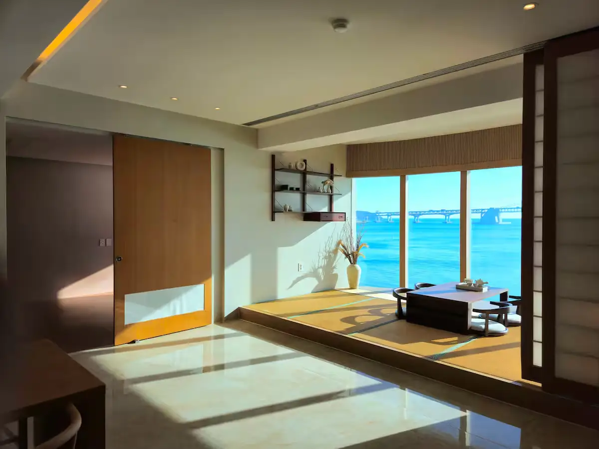
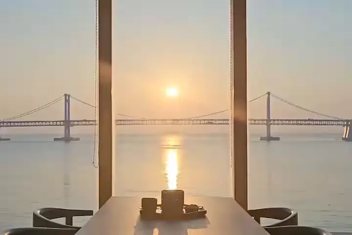
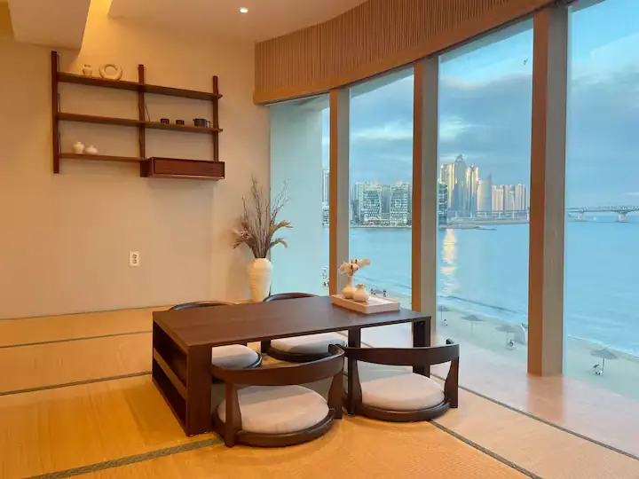
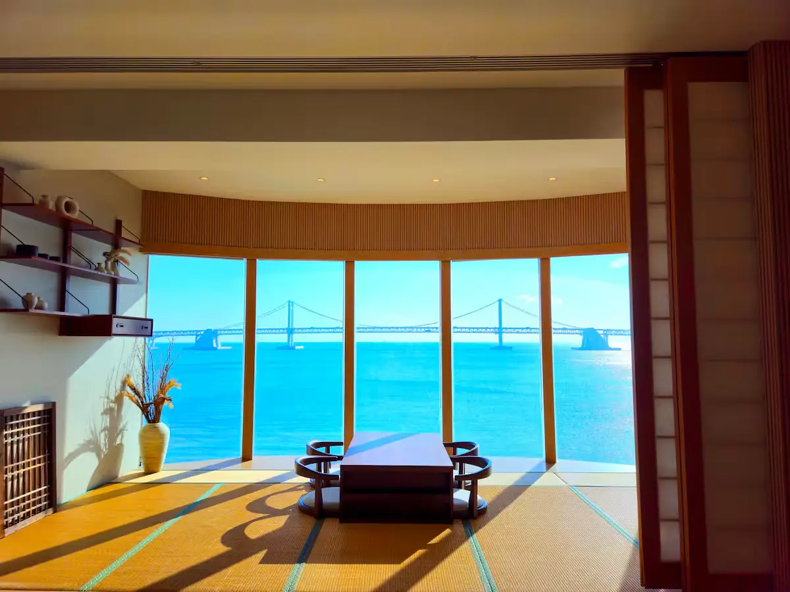
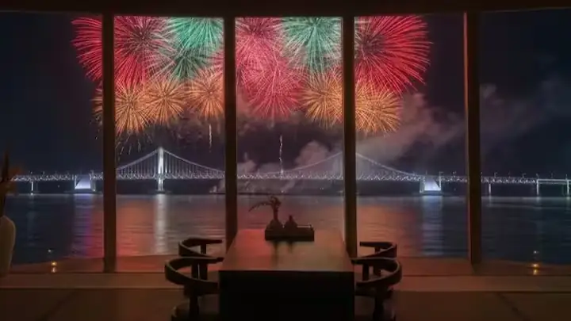
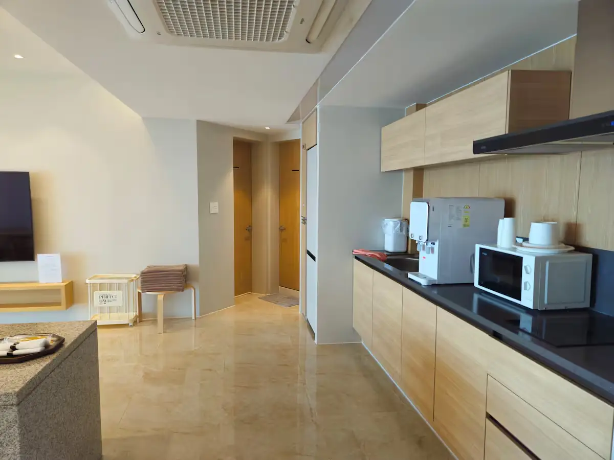
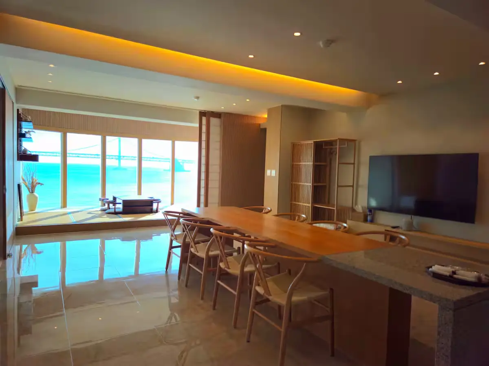
相片由旅伴提供，包含房源宣傳用的煙火觀景照片；實際煙火或無人機活動依主辦單位公告，並非這次住宿日期一定有演出。
房源位置與空間
正面海景 · 廣安大橋全景
位於廣安里海灘第一排中央位置，房源標示海灘就在建築正前方。客廳與用餐空間有大面積海景窗，可以欣賞廣安大橋、海面及夜景；整套房源獨享，無須與其他房客共用。
客廳有約 8–10 人使用的大餐桌、50 吋電視，以及額外軟墊床墊收納空間。
兩間獨立臥室 · 追加床墊
海景臥室及內側臥室各有一張 King Size 特大床墊，標準床鋪可供 4 人使用。七人入住時，另外 3 人需使用房源提供的軟墊床墊（Topper）；加床依預訂人數準備，入住前可向屋主再次確認。
基準入住 4 人、最多 10 人。屋主對額外人數及臨時訪客有額外計費規定，這次七人的實際費用以旅伴提供的住宿總價為準。
廚房及洗沐設備
提供電磁爐、微波爐、電熱水壺、淨水器、基本鍋具、餐具與酒杯。浴室備有淋浴設備、吹風機、直髮梳、毛巾、洗髮精、潤髮乳、沐浴乳與基本清潔用品。
入住規範
入住 16:00、退房 11:00；如需提前入住或延遲退房，須事先與房東協商，房源標示每小時追加 ₩50,000。室內及大樓內禁止吸菸，不接受寵物及未經監護人陪同的未成年人入住。
位於海灘觀光街區，夜間可能有外部噪音，對聲音敏感的旅伴可自備耳塞。
附近停車場
房東提供1 輛車免費停放，停車場位於建築附近；使用時需向工作人員表明是「Ara Gaon」房客。確切停車場名稱、入口位置與車高限制，請依房東入住指引確認。
位於廣安里海灘東端的活魚市場，官方旅遊資料列有付費停車場；若免費車位不適用，需再核對與民宿的步行距離及實際收費。
NAVER 地圖查詢 ↗廣安里海岸東側的公營收費停車場。適合當備案，從廣安里中央住宿處步行可能較遠，需依當日導航確認車位及費率。
NAVER 地圖查詢 ↗附近吃喝
釜山官方旅遊資料介紹的海鮮市場。一樓可挑選生鮮漁獲，再至樓上餐廳用餐；可結合廣安大橋夜景安排海鮮晚餐。地址：水營區民樂水邊路 1。
NAVER 地圖查詢 ↗海岸東側複合式文化空間，集結餐飲、咖啡、選物店與玻璃窗海景座席。地址：水營區民樂水邊路17番街 56；店家營業時間以現場為準。
NAVER 地圖查詢 ↗廣南路上的韓式烤肉餐廳，可作為七人聚餐候選。地址：水營區廣南路 106；七人同行建議確認訂位及停車安排。
NAVER 地圖查詢 ↗海岸道路一帶分布海景咖啡廳、甜點店與夜間餐飲。房源就在海灘前排，可依天氣及排隊狀況彈性挑選，不必跨區。
NAVER 地圖查詢 ↗附近走走與景點
住宿正前方即為廣安里海灘，適合晨間散步、傍晚看海或晚餐後欣賞廣安大橋點燈夜景。
NAVER 地圖查詢 ↗位於廣安里東側海岸，能從不同角度欣賞廣安大橋與海岸景色；若當天風大，可改在咖啡廳休息。
NAVER 地圖查詢 ↗有餐飲、咖啡廳、選物與大片海景玻璃窗的複合空間，適合下雨或太冷時替換戶外散步。
NAVER 地圖查詢 ↗官方例行表演為每週六，11 月冬季時段一般為 19:00 和 21:00，視天氣可能取消。這次住 Ara Gaon 是週日 11/15 至週二 11/17，並非例行演出日；除非另有特別場次，請不要把屋內看秀排成確定行程。
NAVER 地圖查詢 ↗瑞好齋 SEOHOJAE｜釜山站・草梁
2026 / 11 / 17（二）入住 · 11 / 19（四）退房 · 七人兩晚
已查閱 Airbnb 公開房源介紹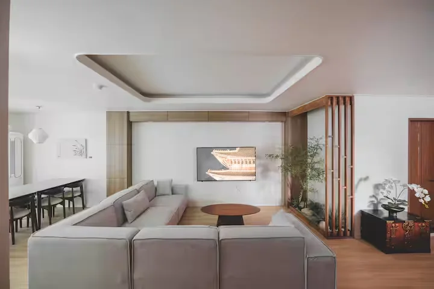
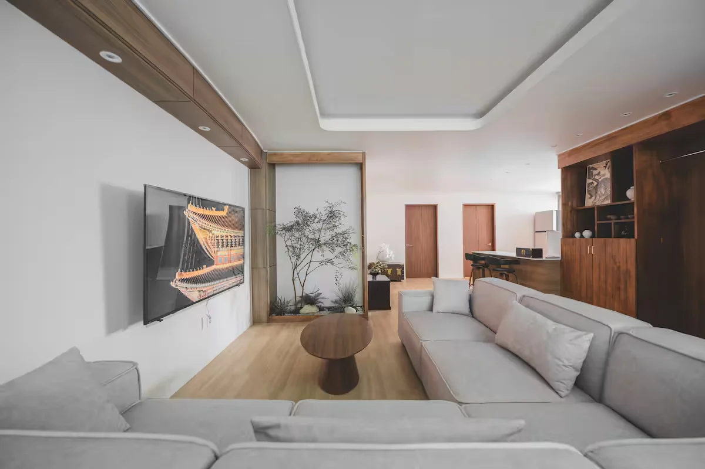
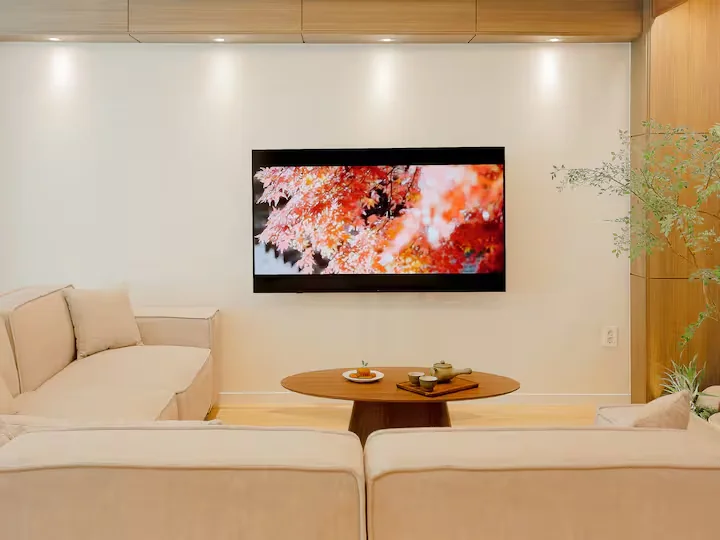
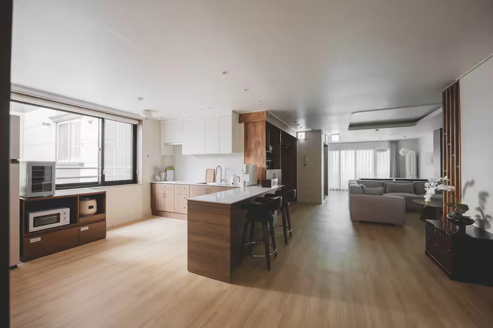
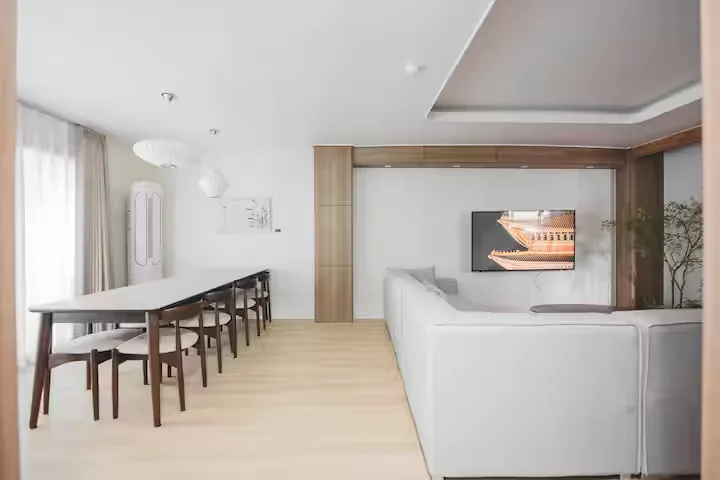
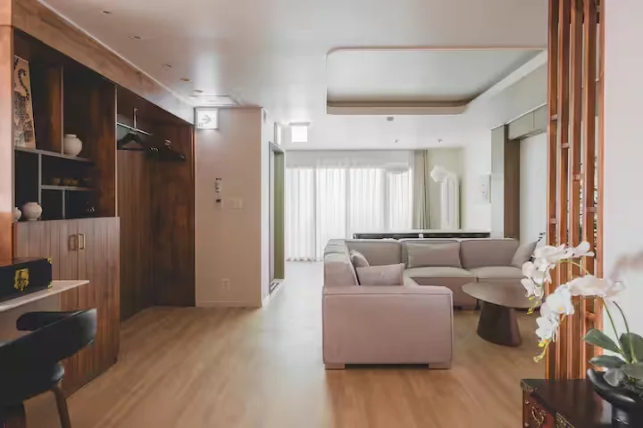
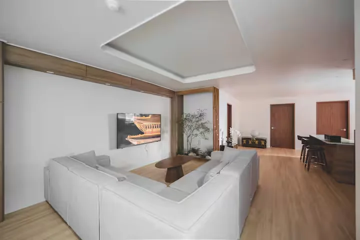
以上為旅伴提供的七張瑞好齋房源實際照片；可在手機上左右滑動，或使用相簿箭頭瀏覽。
房源特色與設備
三房兩衛，適合七人同行
整棟住家式空間約 135 平方公尺（40 坪），房源列有三間臥室、共六張雙人床、兩間浴室，最多可容納十二人；設有客廳、8 人餐桌和廚房，並提供 Wi-Fi、洗衣機及 65 吋智慧電視。
床位配置依 Airbnb 公開介紹，入住前仍建議與屋主核對床鋪分配。
交通方便，但沒有電梯
房源位於草梁站 3 號出口附近，步行約 30 秒；屋主標示到 KTX 釜山站步行約 10 分鐘，下午 3 點入住、上午 11 點退房，支援電子密碼自助入住。
重要：房源在三樓、沒有電梯；七人帶行李搬上樓前，請先評估長輩與大件行李的搬運安排。
附近停車場
房源本身沒有停車位。房東指定的私人停車場，標示步行約 30 秒；刊載全日票 ₩13,000。地址：釜山東區中央大路251番街 24。實際價格及車輛高度限制需停車前確認。
NAVER 地圖查詢 ↗釜山站一帶的其他停車備案，地址約在東區草梁洞 1187-1。與房源的步行距離、當天車位與收費請先由地圖或現場確認。
NAVER 地圖查詢 ↗附近吃喝
釜山代表性豬肉湯飯；店址為東區中央大路214番街 3-8，適合安排在釜山站附近用餐。尖峰時段可能需要候位。
NAVER 地圖查詢 ↗釜山特色小麥冷麵，地址為東區中央大路 225。可與釜山站、草梁街區安排在同一段活動。
NAVER 地圖查詢 ↗以舊建築改造的特色咖啡廳，位於東區中央大路209番街 16；適合下午喝咖啡、吃甜點。
NAVER 地圖查詢 ↗住處位於草梁站出口附近，步行範圍有多間餐廳、咖啡廳與便利商店。實際店家營業日、座位及停車條件出發前再查。
NAVER 地圖查詢 ↗附近走走與景點
釜山東區著名的坡地街巷與歷史散策路線，能認識戰後避難移民與港口城市的生活文化。部分路段陡峭，建議依成員體力調整。
NAVER 地圖查詢 ↗可眺望釜山港的老城階梯景點，目前官方介紹有斜坡式升降梯。同行有長輩，可優先確認升降梯當日運作情況，避免勉強走階梯。
NAVER 地圖查詢 ↗位於釜山站對面的特色街區，可散步、尋找中式料理與小吃，也能與草梁老城街景順路安排。
NAVER 地圖查詢 ↗KTX 車站及其周邊購物、餐飲區；房源標示步行約 10 分鐘，可作為市區交通和集合的明確地標。
NAVER 地圖查詢 ↗以上為草梁／釜山站附近的推薦，並非全部緊鄰住宿門口；步行時間會受實際出入口和坡道影響。停車、餐廳與景點營業資訊請於出發前再確認。
11 / 17 換宿提醒
住宿及照片來源
房源資料：11/15–17 Airbnb 原始連結、11/17–19 瑞好齋 Airbnb 房源介紹。住宿費用與人數採本次旅伴提供資料，非 Airbnb 即時報價。
周邊景點參考：釜山東區官方旅遊網站。兩間住宿的相簿照片均由旅伴提供，第一間 Ara Gaon 七張、第二間瑞好齋七張；其中 Ara Gaon 的煙火照片為房源宣傳圖，不代表住宿當天有煙火表演。
Ara Gaon 資訊與實景相片由本次旅伴提供；廣安里周邊參考：釜山觀光官方／民樂活魚市場、釜山觀光官方／Millac the Market、廣安里無人機秀官方時刻。